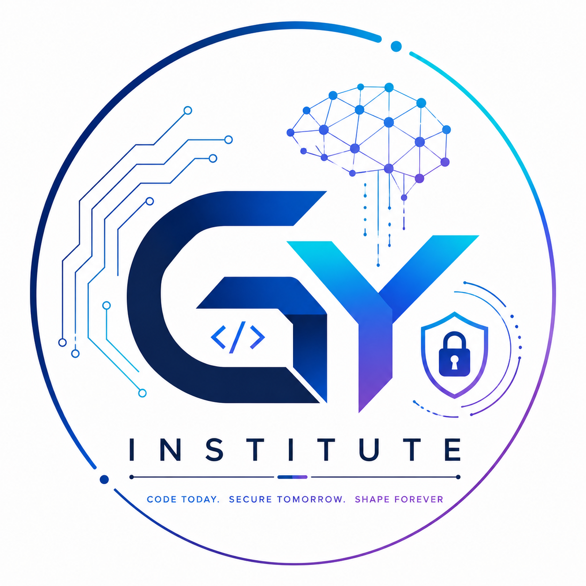

40-Day Training Phase + Practical Internship Phase — structured learning, real project, and professional evaluation.
Instructor-led learning, guided coding, exercises, checkpoints and mini-projects.
Defined project work, task tracker, reviews and code-quality improvement.
Testing, bug fixing, documentation, demo, final submission and wrap-up.
| Day | Topic / Focus | Planned Coverage / Activity |
|---|---|---|
| 01 | Orientation & Setup | Programme expectations, Python use cases, install/setup Python and editor, first program. |
| 02 | Python Basics | Syntax, indentation, comments, scripts, running code, beginner errors. |
| 03 | Variables & Data Types | Naming rules, numbers, strings, booleans, type checking and conversion. |
| 04 | Input, Output & Operators | input(), print(), arithmetic, comparison, logical and assignment operators. |
| 05 | Strings | Indexing, slicing, methods, formatting and text-processing exercises. |
| 06 | Decision Making | if/elif/else, nested conditions and decision-based exercises. |
| 07 | Loops – Foundations | for, while, range(), loop control and repeated tasks. |
| 08 | Loops – Practice | Nested loops, pattern/problem exercises, debugging and review. |
| 09 | Lists | Create, access, update, slice, iterate and use list methods. |
| 10 | Tuples & Sets | Immutability, set operations, uniqueness and collection selection. |
| 11 | Dictionaries | Key-value data, lookup, updates, iteration and nested dictionaries. |
| 12 | Collection Problem-Solving | Combine lists and dictionaries to solve practical data problems. |
| 13 | Functions – Basics | Define/call functions, parameters, return values and scope basics. |
| 14 | Functions – Practice | Default/keyword arguments, reusable logic and decomposition. |
| 15 | Modules & Packages | Imports, standard library overview and organising code. |
| 16 | Error Handling | Syntax/runtime errors, exceptions, try/except/finally and safer code. |
| 17 | File Handling | Read/write text files, file modes, context managers and safe operations. |
| 18 | Structured Data | CSV and JSON fundamentals; read/write structured records. |
| 19 | Comprehensions & Built-ins | Comprehensions, enumerate(), zip(), sorted() and common patterns. |
| 20 | Midpoint Review Milestone | Concept quiz, coding assessment, feedback and revision priorities. |
| Day | Topic / Focus | Planned Coverage / Activity |
|---|---|---|
| 21 | OOP – Foundations | Classes, objects, attributes, methods, constructors and self. |
| 22 | OOP – Design Basics | Instance/class attributes, encapsulation concepts and class exercises. |
| 23 | OOP – Inheritance | Inheritance, overriding, polymorphism and composition overview. |
| 24 | Debugging & Code Quality | Tracebacks, debugging, naming, formatting and readable code. |
| 25 | Problem-Solving Practice | Requirements, pseudocode, edge cases and coding problems. |
| 26 | Standard Libraries | Selected modules such as math, random, datetime, pathlib and statistics. |
| 27 | API Concepts (Intro) | HTTP/API basics, JSON responses and responsible API use where feasible. |
| 28 | Libraries & Environments | pip, virtual environments, dependency basics and reproducible setup. |
| 29 | Testing Fundamentals | Assertions, test cases, expected vs actual output and unit-testing concepts. |
| 30 | Git & Project Workflow | Repository concepts, commits and README basics where tools are available. |
| 31 | Project Planning Workshop | Confirm project scope, requirements, features, task breakdown and milestones. |
| 32 | Mini-Project Build – Phase 1 | Implement core functionality using concepts covered. |
| 33 | Mini-Project Build – Phase 2 | Add validation, data handling, functions/classes and error handling. |
| 34 | Mini-Project Build – Phase 3 | Extend features, improve structure, test normal and edge cases. |
| 35 | Mini-Project Build – Phase 4 | Resolve bugs, refine usability, review code and draft documentation. |
| 36 | Project Review | Mentor review, feedback, issue prioritisation and improvement plan. |
| 37 | Project Refinement | Implement feasible feedback, rerun tests, polish code and README. |
| 38 | Assessment Preparation | Revise concepts, practise explaining code and prepare walkthrough. |
| 39 | Project Presentation | Demonstrate mini-project, explain design decisions and submit deliverables. |
| 40 | Training Assessment Milestone | Knowledge check, practical coding review, feedback and readiness assessment. |
The practical phase shifts from learning concepts to applying them. The mentor will confirm the assigned project, deliverables, tools and task priorities based on student readiness and available project scope.
| Day | Focus | Expected Activity / Output |
|---|---|---|
| 41 | Internship Kickoff & Transition Milestone | Review strengths/gaps, confirm practical assignment, project brief, goals, roles, workflow, communication rules, acceptance criteria and reporting expectations. |
| 42 | Requirements Analysis | Identify users, problem statement, scope, constraints and success criteria. |
| 43 | Project Design | Break project into modules, map workflow, plan data structures and interfaces. |
| 44 | Task Planning | Create a task list, priorities, milestones and an individual work plan. |
| 45 | Environment Setup | Prepare repository/folders, dependencies, configuration and project run instructions. |
| 46 | Prototype / Skeleton | Create project structure and implement a minimum working skeleton. |
| 47 | Core Feature Sprint 1 | Build first core feature and document progress. |
| 48 | Core Feature Sprint 1 Review | Demonstrate work, gather feedback, record issues and next steps. |
| 49 | Core Feature Sprint 2 | Implement the next agreed feature/module. |
| 50 | Data Handling | Implement relevant file, CSV/JSON, database or data-processing logic as the project requires. |
| 51 | Input Validation | Validate user input and handle expected invalid cases. |
| 52 | Error Handling | Add meaningful exceptions, messages, logging where appropriate and safe failure behaviour. |
| 53 | Feature Integration | Connect modules and verify end-to-end flow. |
| 54 | Progress Checkpoint 1 Milestone | Submit progress update, working demo, completed tasks and blockers. |
| 55 | Mentor Review & Re-planning | Review feedback and update priorities without changing approved scope casually. |
| 56 | Core Feature Sprint 3 | Implement remaining agreed core functionality. |
| 57 | Code Refactoring | Improve names, functions, structure, duplication and readability. |
| 58 | Testing – Normal Cases | Write and run test cases for expected usage and core behaviour. |
| 59 | Testing – Edge Cases | Test invalid input, empty data, missing files and other relevant failure cases. |
| 60 | Mid-Internship Review Milestone | Evaluate progress, attendance/participation, code understanding and task status. |
| 61 | User Experience / Usability | Improve prompts, output clarity, navigation or usability appropriate to project type. |
| 62 | Security & Responsible Handling | Review secrets/configuration, data privacy, safe file/API handling and dependencies as relevant. |
| 63 | Performance / Reliability | Check reliability and efficiency; optimise only where meaningful and feasible. |
| 64 | Documentation Draft | Write project overview, setup steps, usage instructions and known limitations. |
| 65 | Integration Checkpoint | Run end-to-end checks and resolve integration issues. |
| 66 | Feature Completion Sprint | Finish remaining approved features and mark incomplete scope transparently. |
| 67 | Bug Triage | Prioritise bugs by impact; fix high-priority issues first. |
| 68 | Code Review | Review maintainability, correctness, consistency and explainability. |
| 69 | Progress Presentation Milestone | Present current build, demonstrate features and discuss open risks. |
| 70 | Feedback Implementation | Implement feasible mentor feedback and record changes. |
| 71 | Test Pass 2 | Repeat regression tests after changes and document results. |
| 72 | Release Preparation | Prepare a clean project copy/repository and verify setup instructions. |
| 73 | Documentation Completion | Complete README, feature list, test notes, limitations and future improvements. |
| 74 | Pre-Final Review | Mentor checks scope coverage, code understanding, evidence and remaining issues. |
| 75 | Phase Review & Finalisation Plan Milestone | Agree final fixes, presentation format, submission checklist and due dates. |
| Day | Focus | Expected Activity / Output |
|---|---|---|
| 76 | Final Bug-Fix Sprint | Resolve agreed high-priority defects and record unresolved issues. |
| 77 | Final Functional Testing | Test core user journeys and confirm outputs match requirements. |
| 78 | Final Edge-Case Testing | Recheck validation, failure handling and relevant boundary cases. |
| 79 | Code Cleanup | Remove temporary/debug code, organise files and verify naming and readability. |
| 80 | Final Documentation | Finalise README, setup instructions, usage guide and project summary. |
| 81 | Submission Package | Prepare source code, required files, test evidence and documentation as instructed. |
| 82 | Mentor Checkpoint Milestone | Review deliverables against acceptance criteria; communicate any gaps. |
| 83 | Gap Closure | Address feasible remaining gaps and clarify any out-of-scope items. |
| 84 | Demo Rehearsal | Practise a concise walkthrough: problem, approach, features, code and limitations. |
| 85 | Final Project Presentation Milestone | Demonstrate the project and answer mentor questions. |
| 86 | Technical Discussion | Explain key code paths, design choices, errors encountered and solutions. |
| 87 | Final Assessment | Complete any final coding, knowledge or project assessment assigned by the mentor. |
| 88 | Reflection & Feedback | Submit learning reflection, self-assessment and feedback on the programme. |
| 89 | Final Review & Status | Mentor reviews attendance, participation, submissions and completion criteria. |
| 90 | Programme Wrap-up Milestone | Close-out meeting, next-step guidance and communication of completion status. |
Issued by: GY Institute, Agra | Winter Arc 2026 – Python Programming Internship